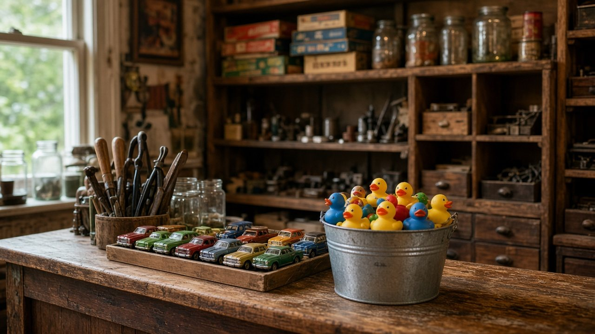

Sample photo“Small fun, second hand and collectibles store in a small town.”
What the shop lists. Something new every day.
Duck-themed items and rubber duckies come up again and again in reviews.
“my daughter got one free rubber ducky and she was so happy, shopper inside was nice also, was able to feel small town charm that we don’t get much anymore”Google · May 2026
“Love this place! And no, it’s not just because I have a jeep and they have a plethora of ducks to choose from. Their selection is always so varied so I can find something for almost anyone. I popped in here in Christmas Eve for some final gifts and I left with multiple bags and one of the best customer service experiences around. Highly recommend!”Google · Dec 2025
Neighbors call it “more of a gift and collectables than a thrift shop.”
Nextdoor neighbor recommendation, Mar 2023
“I found the thrift store cute. It had a good mix of antique-ish items and modern items which I enjoyed. Walked away with several finds.”
The shop's Oct 2025 Nextdoor post welcomed The Book Nest next door, and a Nov 2025 Google review mentions Martindale Studios, a music store, next door too.
33625 SE Redmond-Fall City Rd
Fall City, WA 98024
Tue–Sat 10 AM–5 PM
Sun–Mon closed
Listings vary slightly on opening time (one shows 11 AM). Please confirm before you go.
Email theluckyduckshoppe@gmail.com
Text (206) 335-1297
Facebook: theluckyduckthriftshoppe